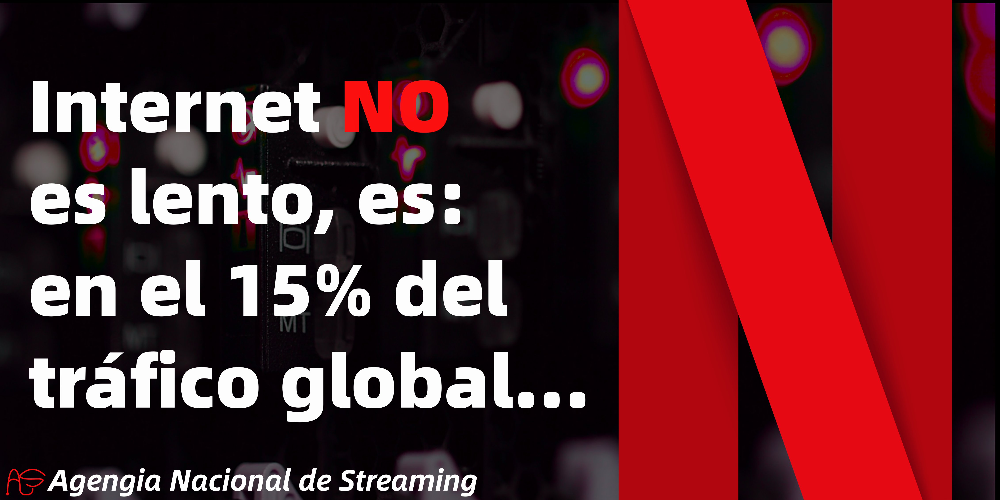

El concepto de streaming se refiere a cualquier contenido de medios, ya sea en vivo o grabado, que se puede disfrutar en computadoras y aparatos móviles a través de Internet y en tiempo real. Los podcasts, webcasts, las películas, los programas de TV y los videos musicales son tipos comunes de contenido de streaming.
Todo lo que necesitas para hacer streaming es una conexión a Internet de alta velocidad rápida y confiable, acceso o suscripción a un servicio o aplicación para hacer streaming y un aparato compatible. Consulta las recomendaciones de velocidad que aparecen a continuación.
El streaming en vivo es la transmisión de un evento por Internet en el momento en que sucede. Los programas de premios, deportes, combates de boxeo, videojuegos y eventos especiales emitidos por única vez son los tipos más populares de streaming en vivo, con una variedad de temas en constante aumento.
El streaming en vivo es la transmisión de un evento por Internet en el momento en que sucede. Los programas de premios, deportes, combates de boxeo, videojuegos y eventos especiales emitidos por única vez son los tipos más populares de streaming en vivo, con una variedad de temas en constante aumento.
